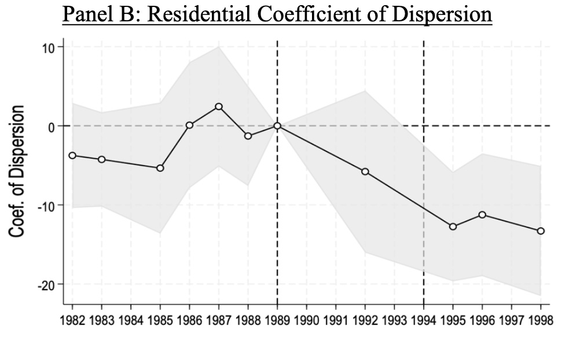
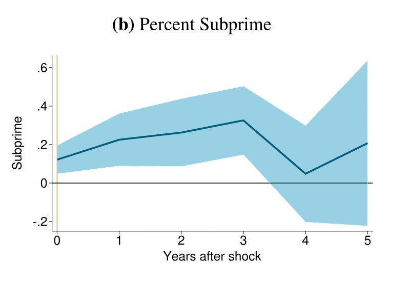
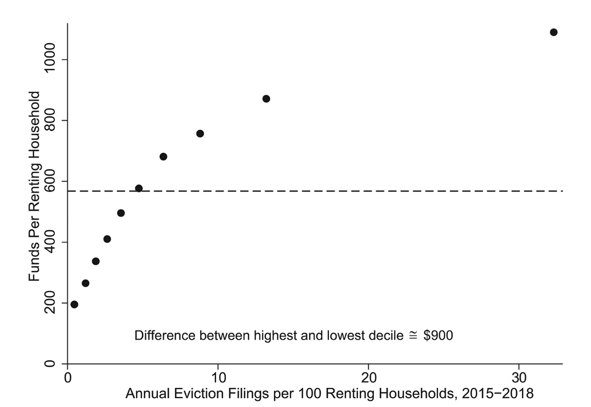
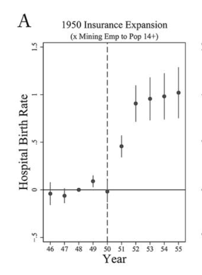
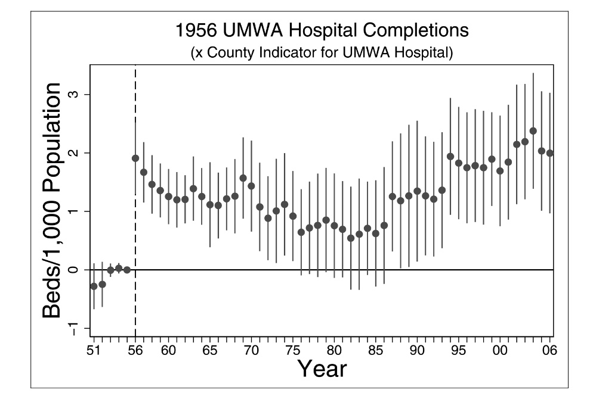
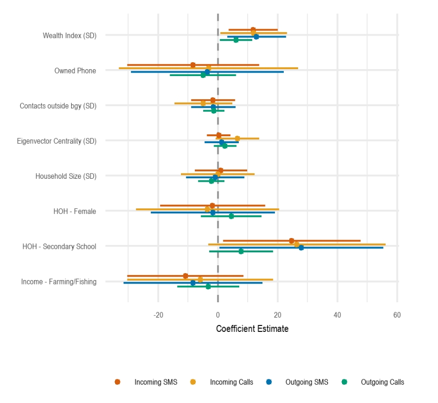
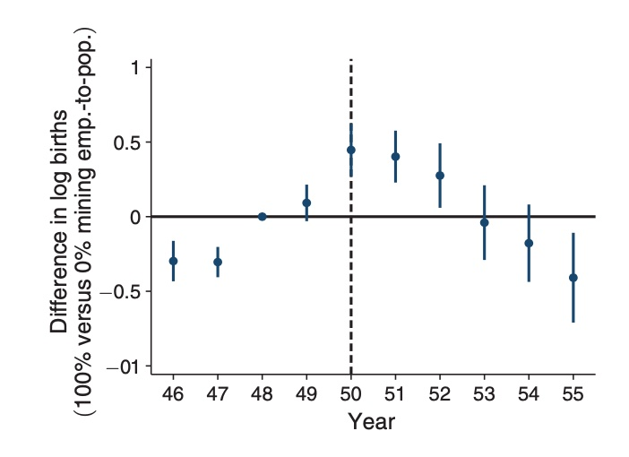

Principal Economist Federal Reserve Board of Governors
I study inequality, focusing on local public finance and rental housing.
Recently, I have been working on property taxation, renter financial well-being, and intergenerational wealth.
Inequality in school funding can stem from reliance on local property taxes. While reforms
address property value and tax rate disparities, assessment accuracy remains underexamined. We
study a property assessment intervention to show how assessments affect school finance
inequality. Using difference-in-differences, we find that state oversight reduced underassessment
and inequitable assessment variability. Assessed values rose by 42 percent and variability fell by
26 percent. The intervention raised local revenue (particularly in districts unable to freely lower
tax rates), reduced state aid that was subsidizing underassessment, and narrowed the revenue gap
between rich and poor districts by 15 percent ($63 per pupil). Our findings show the importance
of accurate assessments and state assessment oversight for school funding inequality.

Figure 2B: Propery reassessment intervention reduced variability in ratio of assessed value to sales price (coefficient of dispersion).
We use individual-level credit data to study how recent declines in Appalachian coal mining affected household
finances between 2011 and 2018. Using exogenous variation in electricity sector demand for coal, we find de-
clines in coal demand decreased credit scores and increased financial distress within two years of coal shocks.
These effects cannot be explained solely by job losses in coal mine worker households. Credit score declines and
financial distress were largest among older individuals and people with lower-middle credit scores. Our results
suggest the transition away from fossil fuels may impose meaningful costs on other fossil fuel extraction
communities.

Figure 6B: One year change in coal demand increases share of subprime borrowers for 3 years(credit score<660).
In response to the COVID-19 pandemic, Congress established the Emergency Rental Assis-
tance (ERA) program, which provided nearly $45 billion to prevent evictions and increase
housing stability. Using administrative data on ERA transactions, we find that ERA sent more
funds per renting household to census tracts with higher prepandemic eviction filing rates,
higher rent-to-income ratios, higher poverty rates, higher shares of Black renting householders,
higher shares of renting households with children, and higher shares of renting single moth-
ers. Our results suggest that ERA was largely successful in reaching communities that were
most likely to have the highest risk of eviction.

Figure 1: ERA funds were targeted at census tracts with higher pre-pandemic eviction filings.
Large-scale health insurance expansions can improve individual outcomes and increase the
availability of health-care services in underserved areas. We explore the effects of a large
health-care program in 1950s Appalachia. The program insured hundreds of thousands
of coal mining families and built new, high-quality hospitals in the area. We can separately
identify the effect of health insurance from the combined effect of the insurance plus new
hospitals. We use difference-in-differences to analyze effects on health-care access and
health outcomes. The insurance alone increased hospital birth rates by 3 percent and re-
duced infant mortality by 2 percent in the average county (over 25 percent of the gap be-
tween Appalachia and the rest of the United States). The combination of the insurance and
new hospitals increased hospital beds by 80 percent and crowd-out was limited, but results
on infant mortality are inconclusive. Our results are consistent with the idea that a large
insurance expansion can increase health access and improve health outcomes for certain
types of basic care. However, a large insurance expansion alone may not be enough to spur
investment in more advanced care that is less likely to be available in underserved areas.

Figure 3A: Health insurance intervention increases hospital birth rates by 3 percent for the average treated county
The U.S. government has supported rural hospitals through direct subsidies and staff recruitment programs. However, little is
known about the long-run impact of large-scale changes to rural health care. The authors explore the long-run trajectory of
Appalachian counties where a coal mining union introduced a pioneering rural health care program in the 1950s, anchored by
a chain of high-quality hospitals. Hospital beds per capita in counties where the union built its hospitals are persistently high
through 2006, even when compared to similar counties and accounting for a variety of supply- and demand-side factors. In
particular, union counties defied a national hospital consolidation trend starting in the 1980s. Results are consistent with a
supply-side explanation where the scale and/or innovation of the union’s investment allowed hospital markets to thrive
and attract patients from a broad geography

Figure 5: Persistent long term increase in hospital beds in counties with mining union hospitals
Niall Keleher, Mary Claire Barela, Joshua Blumenstock, Cedric Festin, Matthew Podolsky, Arman Rezaee, Erin Troland, Kurtis Heimerl
Proceedings of the Eleventh International Conference on Information and Communication Technologies and Development (2020)
What determines the success of community cellular networks? We leverage unique circumstances where all households in seven localities were interviewed before the launch of cellular networks. We observed substantial differences in network adoption across communities. Four communities displayed high and regular usage, while usage dissipated shortly after the network launch in three sites. Sixty-five percent of households made or received at least one call or text message. We find that a one standard deviation increase in household wealth is correlated with a three percentage point increase in network adoption and 43 additional cellular network transactions. Agricultural households were ten percentage points more likely to adopt the network than other households and female-headed households were five percentage points more likely to use the network at least once.

Figure 8: Higher household wealth and education
are positively correlated with increased celluar network activity.
American Economic Review Papers and Proceedings (2019)
We examine how health insurance affects women's fertility decisions by analyzing the United Mine Workers of America (UMWA) hospital insurance expansion beginning in 1950. The program provided comprehensive, zero-cost coverage for pregnancy-related hospital expenses and children's care to union miners' families in Appalachia. Using county-level vital statistics data from 1946-1955 and a trend break specification, we find that insurance coverage significantly reduced fertility rates. Counties with average insurance coverage experienced approximately 1 percent annual declines in births relative to counties with no coverage, totaling a 5 percent decrease over five years. These results provide new evidence for the "quality-quantity" trade-off in fertility: when insurance improves infant survival rates, parents choose to have fewer children since more are likely to survive to adulthood. Unlike previous studies examining temporary or incremental insurance expansions, this large-scale, largely permanent coverage expansion for childbearing women and their children reveals substantial effects on fertility.

Figure 1: Health insurance intervention reversed trend of increasing fertility